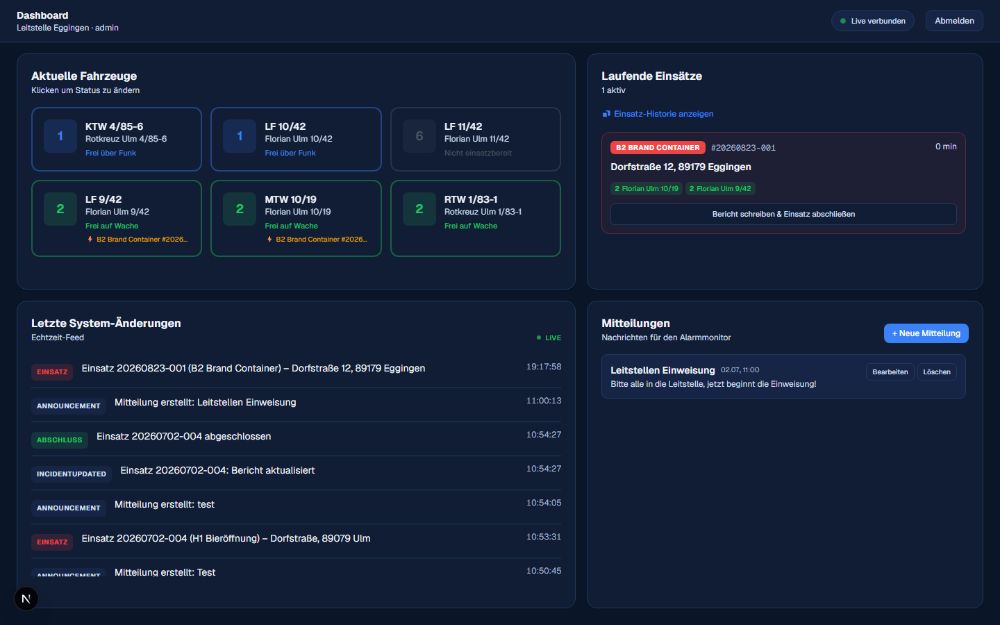

Dashboard
Das Dashboard ist der zentrale Arbeitsplatz für den Disponenten – hier läuft alles zusammen, was gerade in der Leitstelle passiert.

Aktuelle Fahrzeuge
Alle Fahrzeuge mit Status auf einen Blick. Ein Klick öffnet die Status-Änderung – siehe Fahrzeuge & Status. Ein Blitz-Symbol zeigt, wenn ein Fahrzeug gerade im Einsatz gebunden ist.
Laufende Einsätze
Alle aktiven Einsätze als Karten. Ein Klick öffnet die Bearbeitung – siehe Bericht & Einsatz abschließen. Über „Einsatz-Historie anzeigen“ gelangst du zu allen vergangenen Einsätzen.
Letzte System-Änderungen
Ein Live-Protokoll (Echtzeit-Feed) der letzten 20 Ereignisse: neue Einsätze, Statuswechsel, abgeschlossene Einsätze und mehr – nützlich, um schnell nachzuvollziehen, was gerade passiert ist.
Mitteilungen
Kurze Durchsagen für die Wache anlegen, bearbeiten oder löschen. Optional lassen sie sich als „vorlesen“ markieren, damit sie der Alarmmonitor per Sprachausgabe ansagt.
Live-Verbindung
Oben rechts zeigt „Live verbunden“ an, dass das Dashboard über eine Echtzeit-Verbindung (SignalR) läuft: Neue Einsätze, Statusänderungen und Mitteilungen erscheinen ohne Neuladen der Seite sofort bei allen angemeldeten Personen.